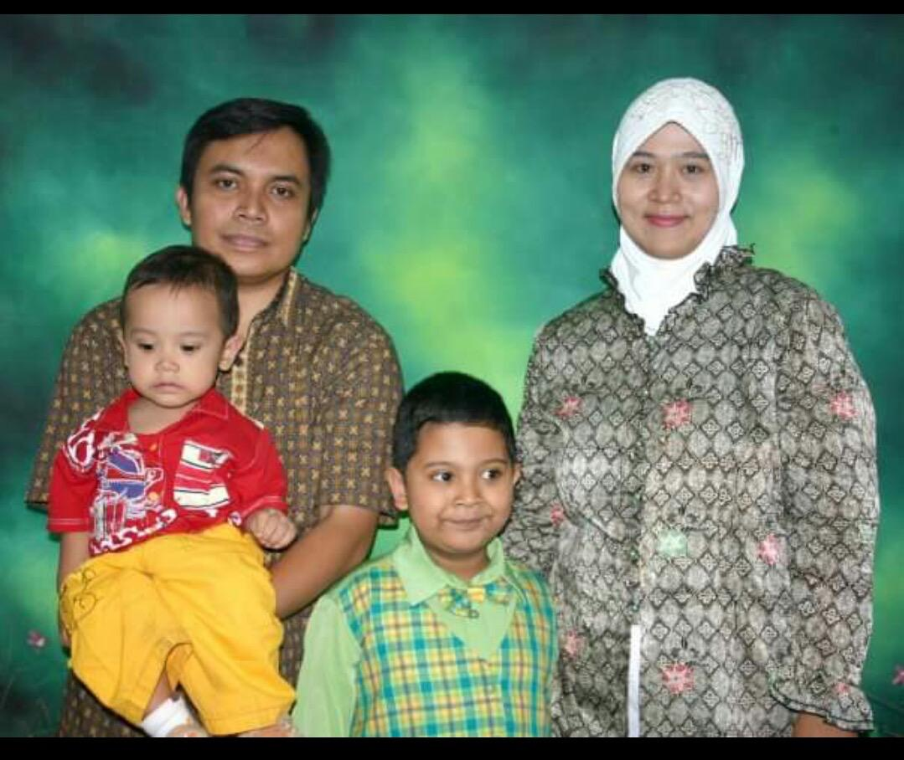
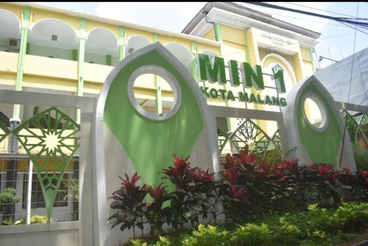
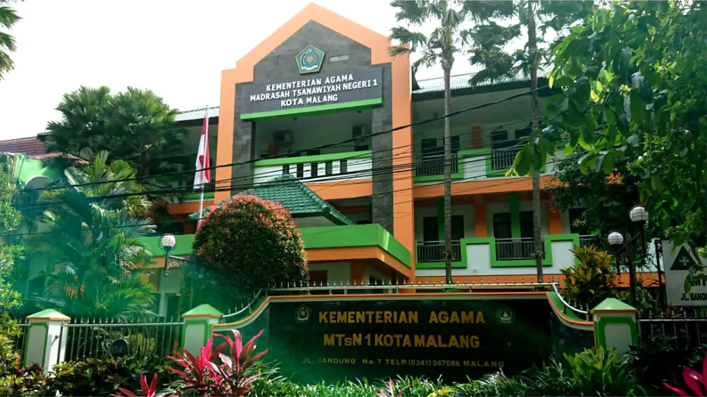
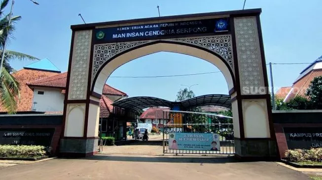
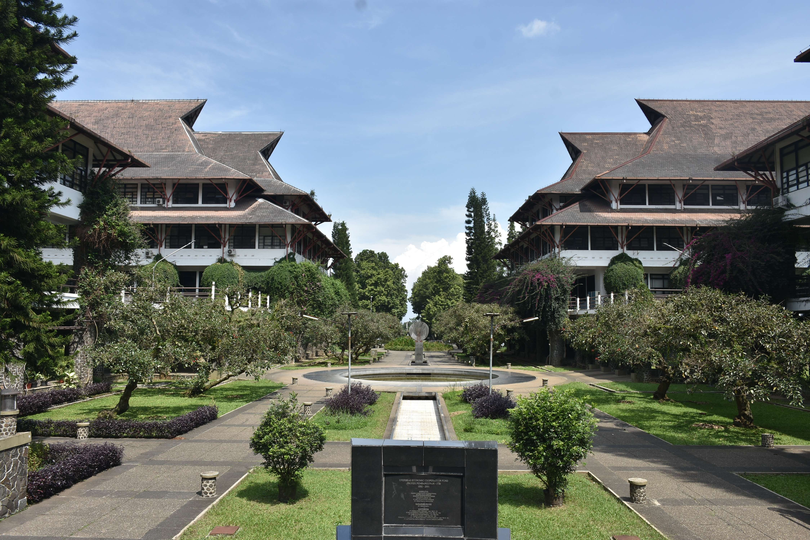

Foto Keluarga
Nama saya Muhammad Imanullah Syawwaluddin. Saya lahir di Kota Malang pada 18 Oktober 2007. Saya adalah anak dari Imam Suyuti dan Dahliana Rejeki Wijayanti serta anak bungsu dari dua bersaudara.
Biografi Masa SD
Saya menempuh pendidikan dasar di MIN 1 Kota Malang. Di sanalah saya menghabiskan enam tahun penuh cerita, mulai dari belajar membaca dan menulis dengan lebih teratur, hingga mengenal banyak teman baru yang menemani hari-hari saya.
Masa SD adalah masa penuh pengalaman berharga. Saya belajar berbagai mata pelajaran dasar seperti Matematika, Bahasa Indonesia, IPA, hingga Pendidikan Agama Islam. Tidak hanya itu, saya juga mengikuti kegiatan keagamaan dan berbagai aktivitas sekolah yang membuat saya semakin percaya diri dan berani tampil di depan orang lain.
Biografi Masa SMP
Saya melanjutkan pendidikan di MTsN 1 Kota Malang setelah menyelesaikan masa SD di MIN 1 Kota Malang. Kiprah saya dalam dunia matematika telah dimulai sejak SD, dan kini berada di bangku MTs, saya berharap bisa memetik lebih banyak pengalaman, prestasi, dan tentu saja, mengenal teman-teman baru serta guru-guru inspiratif. Saya juga masuk kelas unggulan yaitu kelas Olimpiade Matematika disana dan tentu saja fokus saya selama SMP di MTsN 1 Kota Malang adalah mencari dan meraih prestasi lomba di bidang matematika sebanyak banyaknya.
Biografi Masa SMA
Setelah menyelesaikan pendidikan di MTsN 1 Kota Malang, saya melanjutkan jenjang SMA di salah satu madrasah unggulan nasional, yaitu MAN Insan Cendekia Serpong. Bagi saya, bisa diterima di sekolah ini adalah sebuah kebanggaan sekaligus tantangan besar, karena lingkungan belajarnya sangat kompetitif dan dihuni oleh siswa-siswa terbaik dari berbagai daerah di Indonesia. Sejak hari pertama, saya merasakan bahwa MAN IC Serpong bukan sekadar sekolah, tetapi juga asrama pendidikan yang membentuk karakter, akhlak, dan semangat belajar 24 jam penuh. Hidup di asrama mengajarkan saya tentang kemandirian, kedisiplinan, serta bagaimana menyeimbangkan antara kegiatan akademik, ibadah, dan organisasi.
Cita" Kedepan
Saya bercita-cita melanjutkan pendidikan tinggi di Institut Teknologi Bandung (ITB), khususnya di Fakultas Teknik Pertambangan dan Perminyakan (FTTM). Bidang ini menarik minat saya karena menuntut kemampuan analisis, logika, dan ketekunan, sama seperti matematika yang selama ini saya tekuni. Lebih dari itu, saya ingin kelak bisa membanggakan orang tua saya, terutama ibu, dengan keberhasilan menembus kampus impian. Bagi saya, setiap prestasi yang saya raih adalah langkah kecil menuju cita-cita besar. Dengan doa, kerja keras, dan dukungan dari orang tua serta guru, saya yakin bisa meraih impian tersebut.